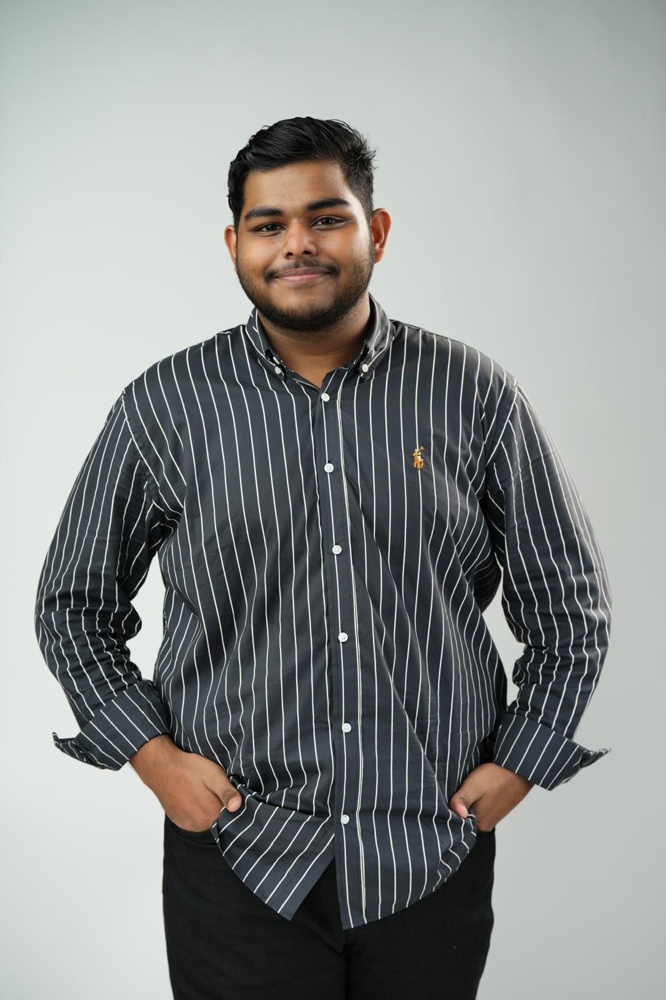
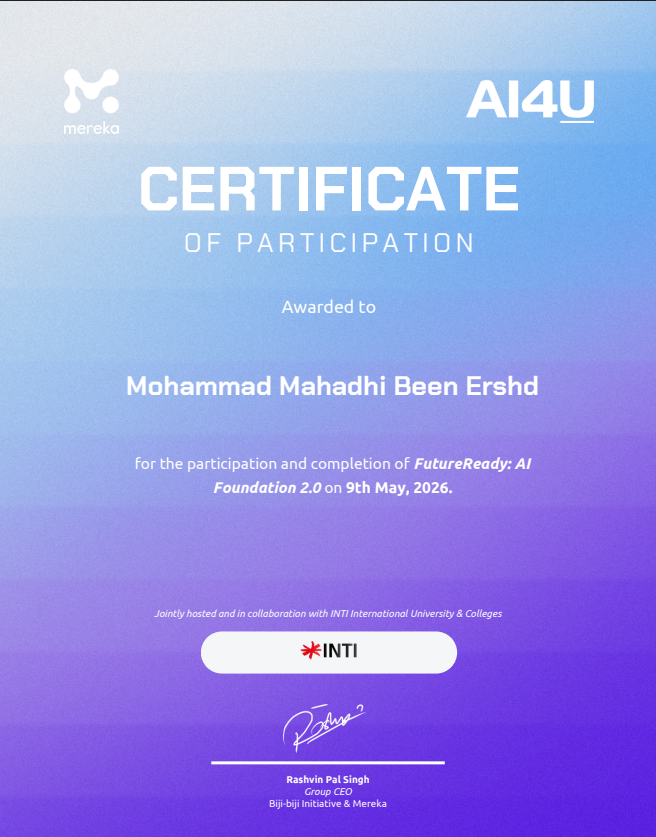
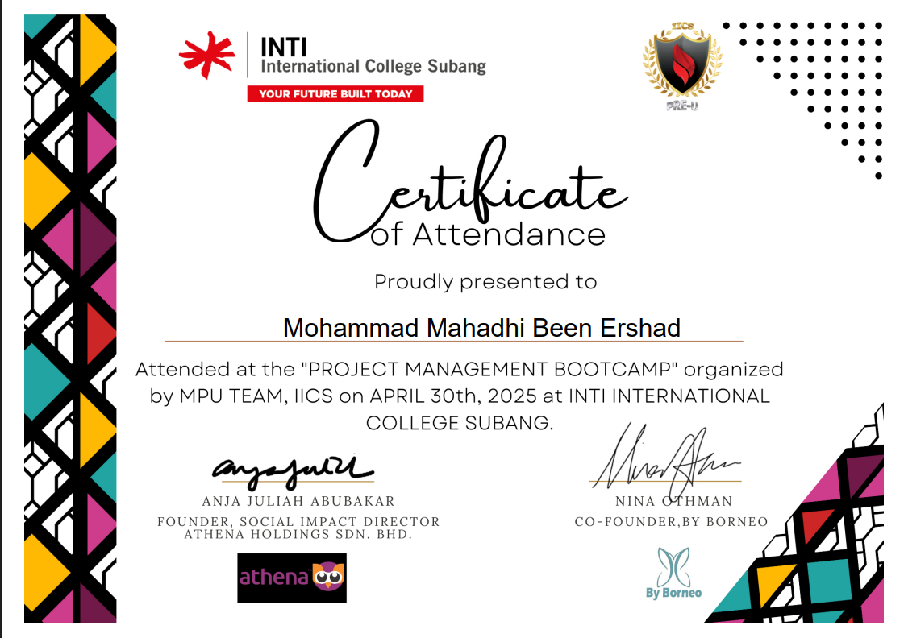
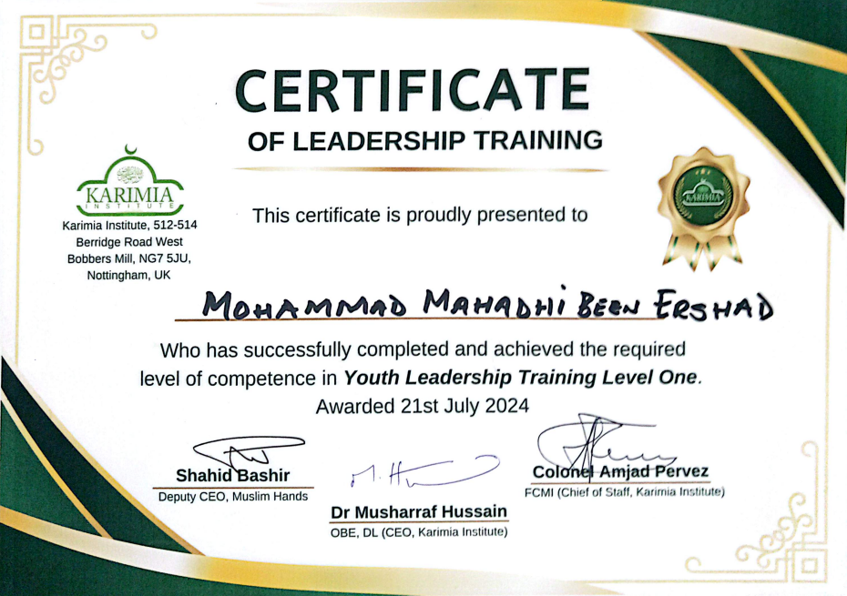
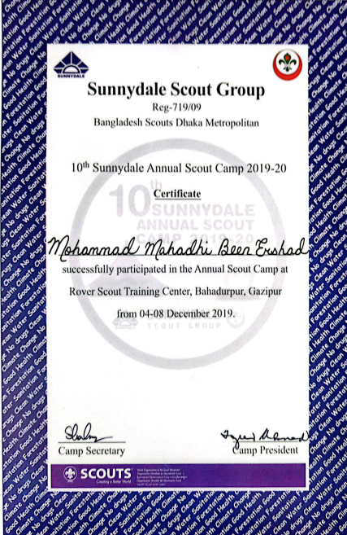
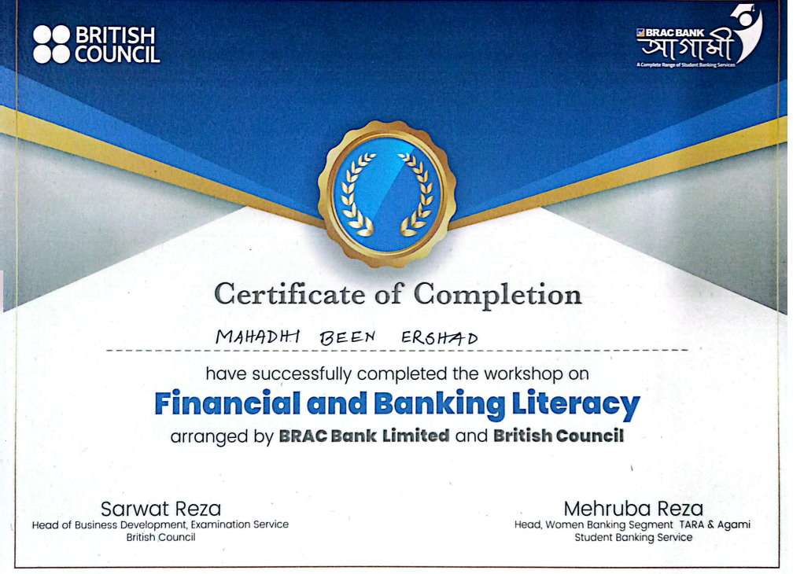
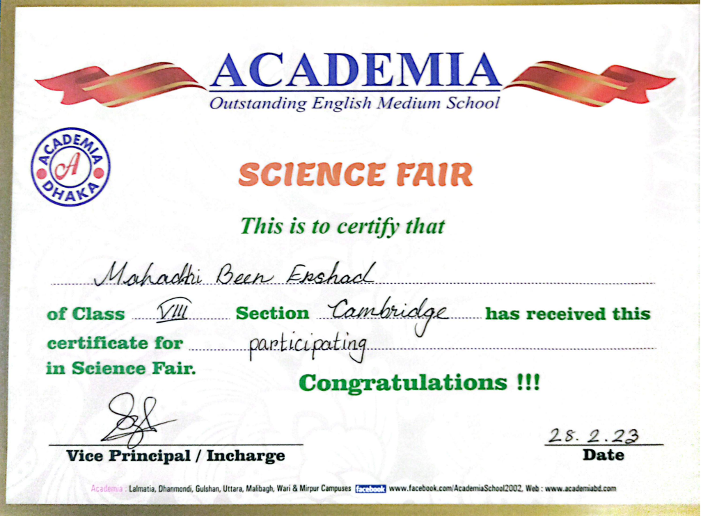

Information Technology Student passionate about software development, leadership, and building practical solutions through technology.
View My Work
I am a Semester 5 Diploma in Information Technology student at INTI International College Subang. Originally from Bangladesh and currently studying in Malaysia, I am passionate about technology, software development, leadership, project management, and continuous learning. My experiences include software development projects, leadership training, scouting, volunteering, and professional development programs.
Semester 5 Diploma in Information Technology
Bangladesh → Malaysia
FC Barcelona supporter and football enthusiast.
Built and deployed a Campus Mobile Application.
Scouting, competitions and leadership activities.
Strengthened leadership and communication skills.
Began Diploma in Information Technology at INTI.
Professional development and teamwork training.
Explored AI and emerging technologies.
Developed and deployed a working application.
Developed a mobile friendly application for campus information and student services.
Launch DemoStudent: Stu004 / Pass-123456
HOD: Hod001 / Pass-123456
Admin: Admin001 / Pass-123456

FutureReady AI Foundation

Project Management Bootcamp

Youth Leadership Training

Scout Camp

Financial Literacy

Science Fair
Outside technology and academics, I enjoy football, traveling, leadership activities, and community engagement. Football has taught me teamwork, discipline, communication, and resilience which I apply in academic and professional projects.
Name: Mohammad Mahadhi Been Ershad
Email: mahadhiacademia@gmail.com
Institution: INTI International College Subang
Program: Diploma in Information Technology